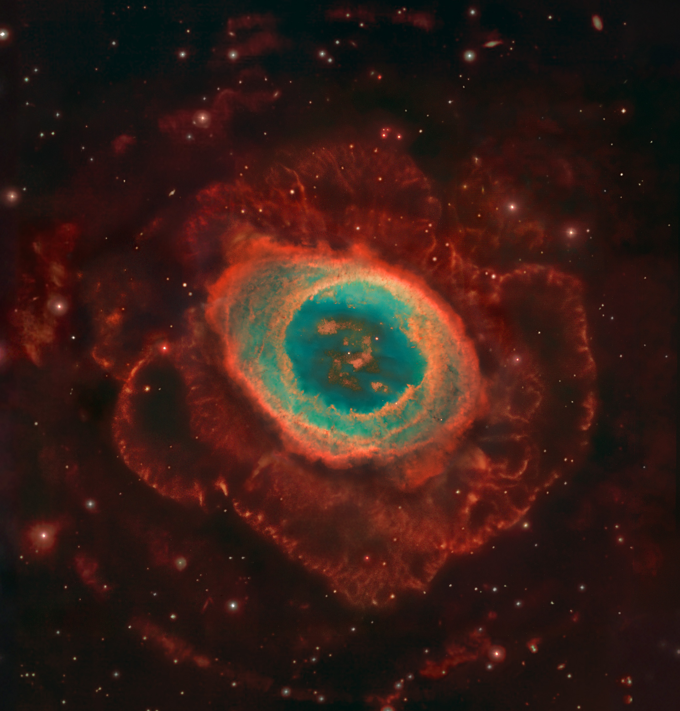
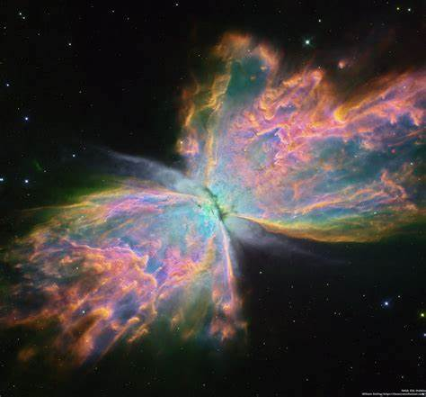
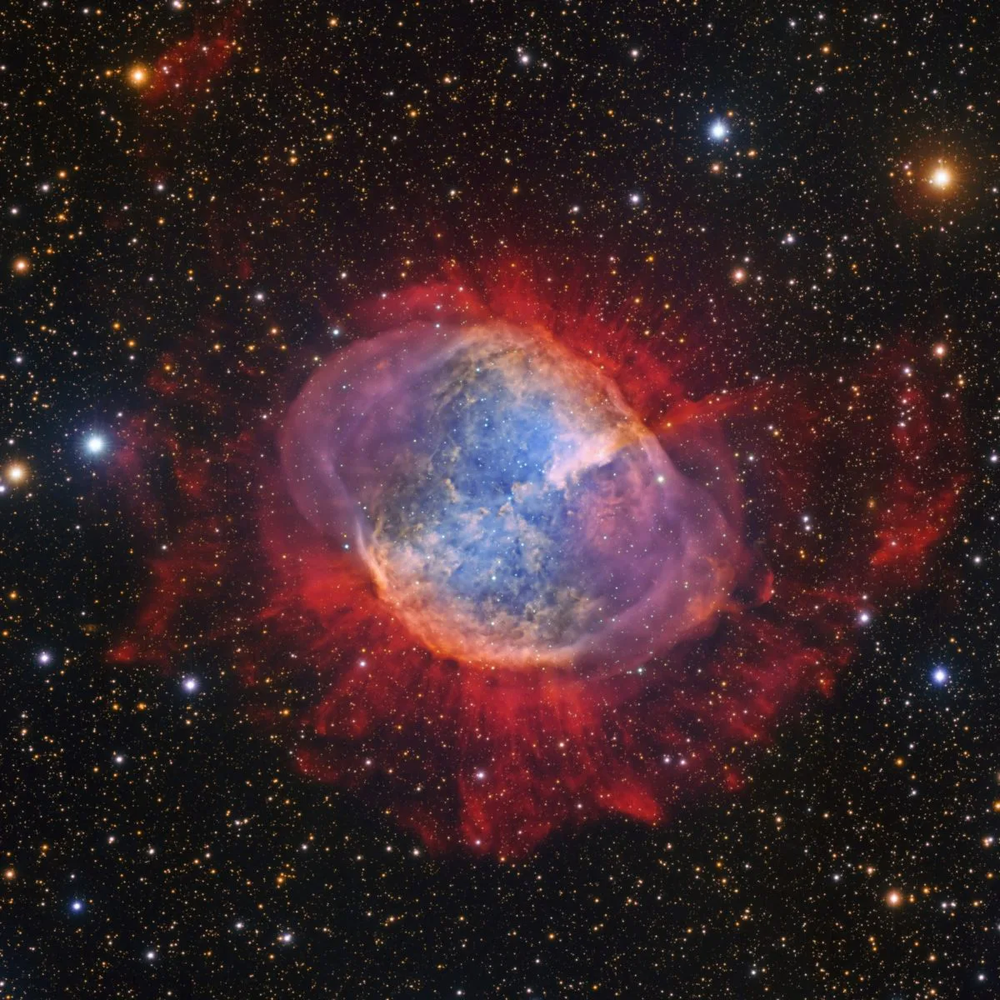

Las nebulosas son vastas nubes de gas y polvo en el espacio interestelar.
Estas estructuras pueden ser lugares de formación de estrellas y sistemas planetarios,
y se consideran fundamentales en el ciclo de vida de las estrellas.